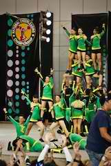
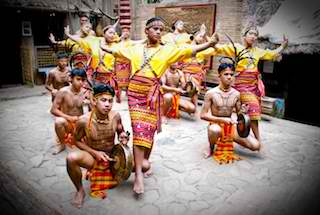
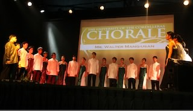
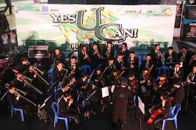

UC Center for Creative Productions
Creative Director: Engr. Aloysius Mapalo
Asst. Director: Mr. Peejay Natiola
The UC Center for Creative Productions is the performing arts center of the university. Comprising of UC students as performers and production staff, the center produces performances for the university and for the public, either as official school productions or as official school representations in outside events and competitions. As of now, the center has four performing groups:

UC Dance Squad
Head Trainor & Choreograper: Mr. Peejay Natiola
Asst Trainor: Mr. Alfonso Fresnido
The UC Dance Squad is the official dance group of the University. They perform multi-genre of dances like Cheerleading, Hiphop, Jazz, Dancesport, Ballroom, Streetdance, Ballet, Neo-ethnic, Contemporary, Folk Dance, and many others.

UC Hapiyoh Mi Cultural Group
Trainor & Adviser: Prof. Maria Aplaten
The UC Hapiyoh Mi Cultural Group is a specialized group performing the music, rituals, and dances of the northern mountain highlands, the Cordillera Region. --in theatrical forms, and in short or long presentations, complete in full authentic costumes, instruments and accessories.

UC Chorale
Trainor & Conductor: Mr. Walter Mang-usan
The UC Chorale is the official vocal ensemble of the University. They perform an array of choral music styles and forms such as local and international folk songs, sacred music, popular, jazz, Broadway, classical and contemporary music.

UC Percussions & Orchestra
Trainor & Conductor: Mr. Paul Serrano
The UC Percussions & Orchestra is the newest addition to the UC-CCP performing artists. The group is a 40-piece musical instruments ensemble with strings section, brass section, wind section, and persussion and drums section. They perform all types of musical genres, from classical to popular music.